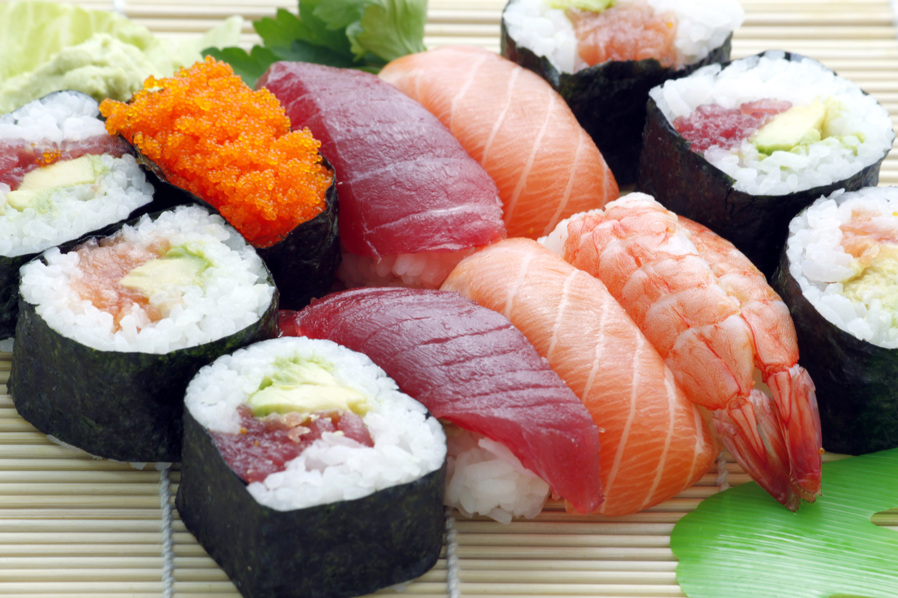

Salmon Sushi

Description
Cooked, cooled rice wrapped in nori with a tasty salmon center.
This dish is traditionally from Japan, though it has become a popular food in many countries.
Served with a side of soy sauce and wasabi - most wasabi outside Japan is actually horseradish with green colouring added.
Ingredients
- Nori
- White rice
- Rice wine vinegar
- White sugar
- Salmon
- Soy sauce (to serve)
- Wasabi (to serve)
Equipment
- Sushi rolling mat
- Sharp cutting knife
Steps
- Cook white rice
- While hot, mix with 4 tablespoons of white whine vinegar and 2 tablespoons of sugar. Allow to cool
- Cut salmon into thin strips
- On a sushi rolling mat, lay one piece of nori. Spoon rice so it covers two thirds of the sheet. Spread rice evenly to the ends of the mat
- Lay slices of salmon on the rice-covered nori, forming one long line.
- Roll nori up, starting with the salmon-covered side
- Repeat the above process, until out of rice
- Refrigerate rolls
- TO serve, use a sharp knife to cut rolls into slices approx. an inch thick
- Serve with a side of soy sauce and wasabi
Home